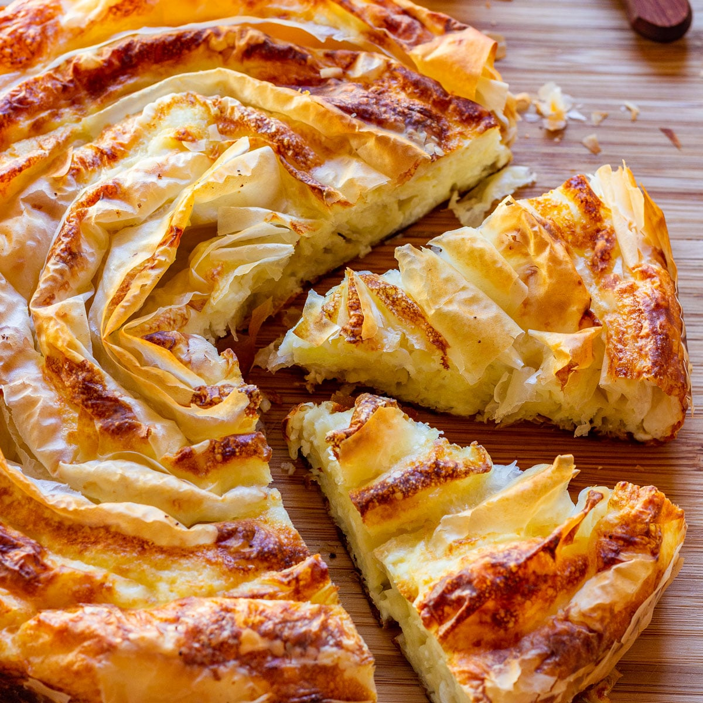

Banitsa

Description
Traditional Pastry Pie from Bulgaria with cheese filling
Ingredients
- 30g butter, plus extra to grease
- 3 large eggs
- 125g low-fat natural yogurt
- 2 tbsp sunflower oil
- 8 small sheets filo pastry, from a 220g pack
- 200g vegetarian feta, crumbled
Steps
- Preheat the oven to 200°C, fan 180°C, gas 4. Grease a 20cm round baking dish with butter. In a mixing bowl,
lightly whisk together the eggs, yogurt and oil.
- Lay one sheet of pastry out on your work surface and drizzle over some of the egg and yogurt mixture.
Scatter over some feta and then roll up the pastry from one of the short sides, into a cigar shape. Place in
the prepared baking dish, following the edge. F
- Bake for 45 minutes, or until risen and golden brown. Remove from the oven, cover with a clean cloth and
leave to cool until warm. Serve cut into wedges.